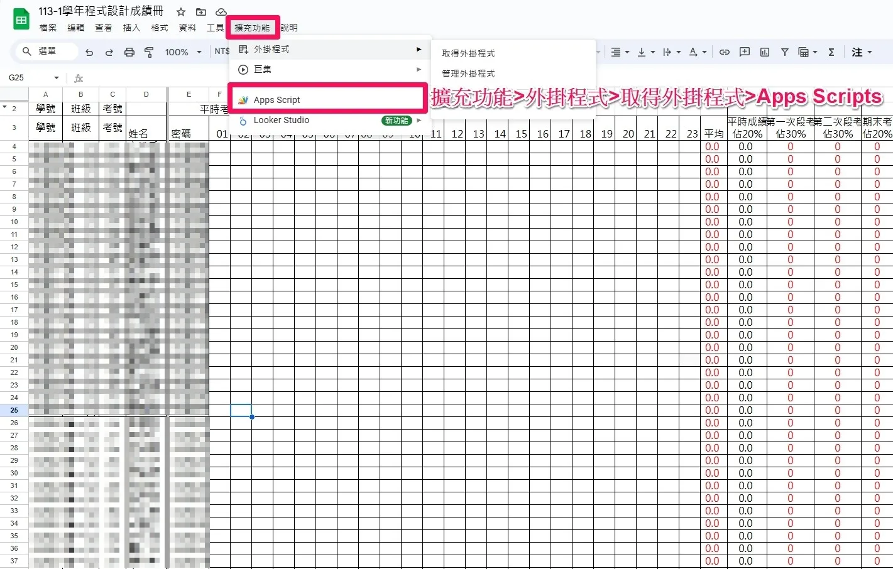
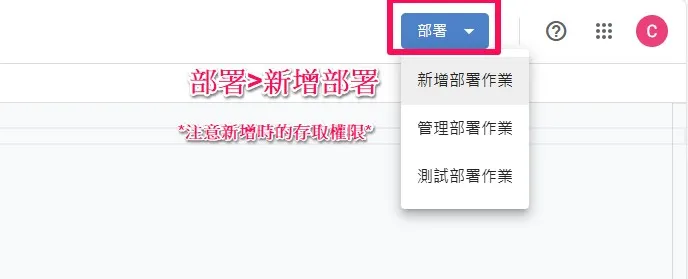
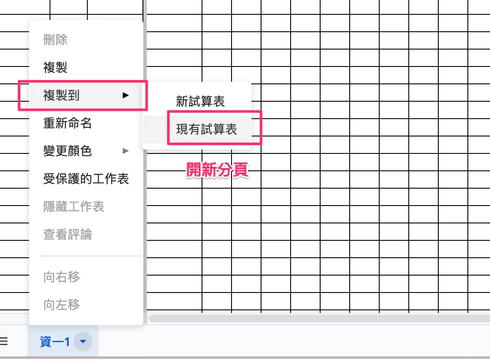

利用Google Sheet 和 App Script 製作簡易成績查詢網站
開學啦！透過Google Sheet製作查詢成績小工具，學生只需輸入學號與密碼即可查看成績，方便又有趣。建立副本、修改程式碼、部署，簡單四步驟就完成啦！想要試試看？留言給我，我會傳送連結給你。祝大家學業進步，開學愉快！
開學了！和大家分享讓班上學生自行查詢課堂成績的方式。
根據國民小學及國民中學學生成績評量準則，學校得公告說明學生分數之分布情形。但不得公開呈現個別學生在班級及學校排名。
我用這個方式一個學期了，目前感覺還不錯。在介面上選擇班級後輸入學號與密碼，即可得知自己的成績。
如果你喜歡，可以透過下面留言信箱，我會盡快傳送連結。
這是用Google Sheet作為簡單的資料庫，並用App Script搜索與呈現網頁的方式來製作。
步驟一、建立副本
可以在左上角按建立副本，在新的副本中，你可以輸入學號、班級、考號、姓名與密碼，學生接下來會以學號與密碼做查詢（密碼學生可自行再做更改）。
步驟二、開啟App Script
點選右上方擴充功能點選App Script。如果沒有的話，可以從取得擴充功能開啟。

步驟三、修改程式碼、部署
打開App Script後，修改忘記密碼時，學校的信箱後綴。
再按右上角部署的新增部署作業。

選擇這個網址要公開的對象後，比如只對同個網域的人開放，按部署後，網站就公開囉。
如果有多個班，複製多個分頁即可解決。

步驟四、短網址設置
你可以把網址貼在classroom，我是使用bit.ly進行縮網址，並可以設定客製化網址比如：bit.ly/113成績
希望大家開學順利，大家掰掰。